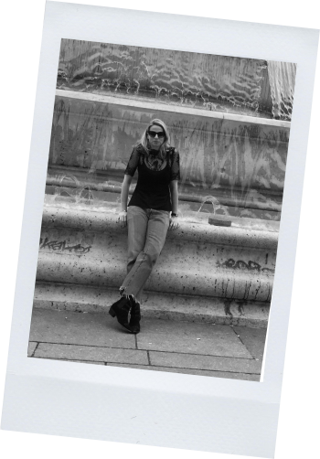
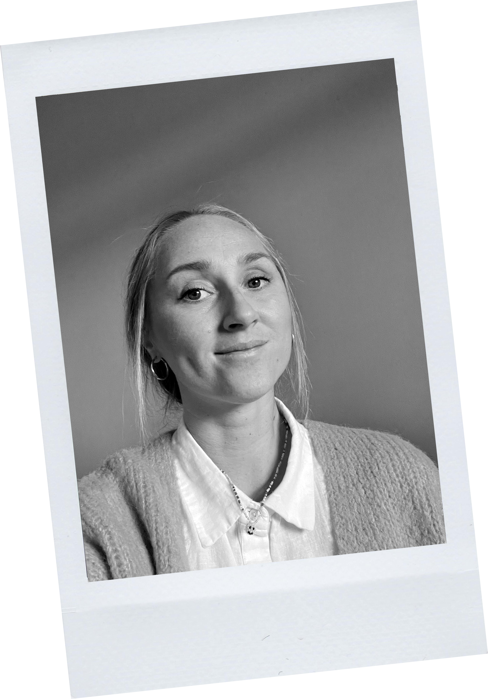

← Locals Do It
LOCALS DO IT / THE PEOPLE
MEET THE TEAM


CAMILLA FRANK / +25 years of experience as an Editor In Chief in the Scandinavian media marked with a strong focus on lifestyle titels and digital platforms. Also holds a BA in Literature, a degree in Journalism and has a strong Start Up DNA, which has led to opening and running of a pop up cinema, creating art galleries and building digital media platforms from scratch – and now to opening Francisca: A vintage high end fashion shop and gallery in Nansensgade.

MAJA LAUNGAARD ANDERSSON / Culture-oriented Art Director and Graphic Designer with experience in theatre, literature, fashion, and the museum world. The combination of a Bachelor's degree in Creative Communication from DMJX and a Master's in Digital Design and Communication from ITU in Copenhagen supports a practice focused on creating sensory experiences across both physical and digital realms — there's no reason the two shouldn't get along just fine.